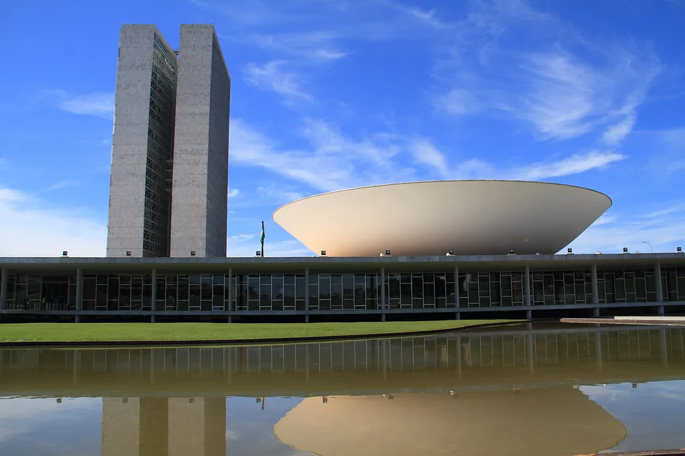

이재명 대통령, 브라질리아서 룰라와 정상회담…"전략적 동반자 관계 격상"
이재명 대통령이 남미 순방 일정의 본무대인 브라질에서 룰라 다시우바 대통령과 정상회담을 갖는다. 이 대통령은 미국 샌프란시스코 일정을 마친 뒤 26일(현지시간) 브라질에 도착해 남미 3개국 순방의 첫걸음을 뗐으며, 27일에는 수도 브라질리아에서 공식환영식을 시작으로 본격적인 정상 외교 일정을 소화했다. 한국 대통령이 브라질을 국빈 방문한 것은 21년 만으로, 그만큼 이번 순방에 거는 양국의 기대도 남다르다는 평가가 나온다.
이날 일정은 공식환영식에 이어 한·브라질 정상회담, 양해각서(MOU) 서명식, 공동언론발표, 국빈오찬 순으로 진행됐다. 이번 정상회담은 지난 2월 룰라 대통령이 방한했을 당시 양국이 합의한 '전략적 동반자 관계' 격상을 구체적으로 실행에 옮기는 자리로 평가된다. 당시 양 정상은 관계 격상에 합의했지만 세부 이행 방안은 이후 실무 협의를 거쳐 마련하기로 한 바 있어, 이번 브라질리아 회담이 그 결실을 맺는 계기가 될지 주목된다. 정부는 이번 회담을 통해 그간의 협력 논의를 구체적 성과물로 전환하는 데 주력한다는 방침이다.

이번 회담에서는 핵심광물과 방산 등 분야에서 경제협력을 확대하는 방안이 주요 의제로 논의된 것으로 전해졌다. 브라질은 니켈, 철광석 등 자원이 풍부한 남미 최대 경제국으로, 공급망 다변화를 추진하는 우리 정부 입장에서 전략적 협력 가치가 큰 국가로 꼽힌다. 방산 분야에서도 브라질군 현대화 수요와 맞물려 협력 확대 가능성이 거론돼 왔으며, 양측은 이번 회담을 계기로 관련 협력의 구체적인 틀을 마련하는 데 힘을 쏟은 것으로 전해진다.
브라질은 이미 남미 지역에서 한국의 최대 교역 파트너이자 1위 투자 대상국이다. 현재 브라질에는 120여 개의 한국 기업이 진출해 있는 것으로 파악되며, 이번 정상회담을 계기로 양국 간 교역·투자 규모가 한층 확대될 것이라는 기대가 나온다. 정부 관계자들은 이번 방문이 자원 부국인 남미 지역과의 경제협력 지평을 넓히는 계기가 될 것으로 보고 있다. 특히 전기차·배터리 산업의 핵심 원료인 니켈 등 전략 광물 확보 경로를 다변화할 수 있다는 점에서 국내 산업계의 관심도 함께 쏠리고 있다.

이 대통령의 이번 순방은 브라질을 시작으로 남미 3개국을 잇달아 도는 7박 11일 일정의 일부다. 브라질 방문을 마친 뒤에는 나머지 순방국으로 이동해 자원·통상 협력을 논의할 예정인 것으로 전해졌다. 앞서 이 대통령은 미국 샌프란시스코에서도 인공지능(AI) 관련 협력 방안을 논의한 바 있어, 이번 남미 순방까지 이어지는 일련의 외교 일정이 경제·기술·자원을 아우르는 실리 외교로 평가받고 있다.
외교가에서는 이번 방문이 단순한 의전성 순방을 넘어 자원 확보와 신흥시장 개척이라는 실리 외교의 성격이 짙다는 평가가 나온다. 특히 미국발 관세 리스크와 글로벌 공급망 재편이 이어지는 상황에서, 남미 자원 부국들과의 협력 강화가 우리 경제의 새로운 활로가 될 수 있을지 후속 성과에 관심이 모인다. 정치권 안팎에서는 이번 순방에서 도출된 성과가 향후 국회 비준이나 후속 협정 체결로 이어질지가 관건이 될 것이라는 관측도 나온다.